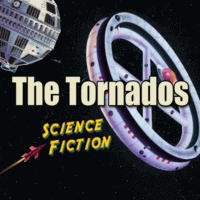

the Tornados - Science Fiction (Album, 2007)
01 - Telstar (3:23)
02 - Globetrotter (2:57)
03 - Ridin' The Wind (3:23)
04 - Robot (2:48)
05 - Life On Venus (2:23)
06 - Dr Who (2:46)
07 - 2001 (4:08)
08 - Space Oddity (4:57)
09 - Trip To Pluto (2:30)
10 - Barbarella (3:16)
11 - Starman (3:50)
12 - Star Wars (3:43)
13 - Time Machine (4:13)
14 - Thunderbirds (3:28)
15 - Close Encounters (4:38)
16 - Nights In White Satin (2:58)
17 - Star Trek (3:13)
18 - Red Dwarf (2:32)
19 - Logan's Run (4:51)
20 - Fireball XL5 (2:37)
21 - Generation X (2:28)
© Secret Records Limited :: [CRIDE 80]
Notes
United Kingdom.
Dave Harvey - Bass guitar
Clem Cattini - Drums
Derek Griffiths - Guitar
Colin Frechter - Keyboards
Arranged by Colin Frechter
Engineered by Bas Keller
reference information: Discogs®
Review
122/366 (Project 366)
Legendary spacesurf rockin' and rollin' band with tune up look. Science fiction as is. Greatest instrumental pop songs.